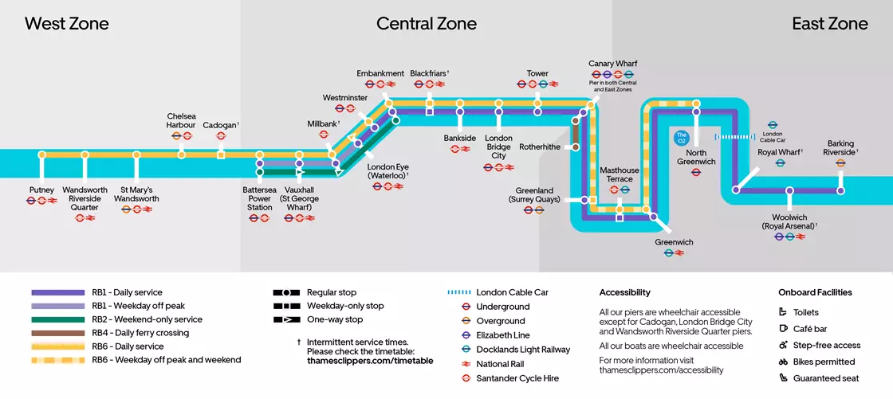

Uber Boat by Thames Clippers
Découvrez Londres depuis la Tamise grâce à l’Uber Boat by Thames Clippers : un moyen de transport rapide, confortable et panoramique reliant 24 quais de Putney à Barking Riverside.
Carte des arrêts

→ Carte interactive et horaires
Horaires
- Service 7j/7, du matin tôt jusqu’à tard le soir.
- Fréquence : toutes les 20 minutes environ en journée.
- Lignes principales : RB1 (quotidien), RB2 (week-ends), RB6 (heures de pointe).
Tarifs
- Adulte : à partir de £5.60.
- Enfant (5–15 ans) : 50% de réduction.
- Gratuit pour les moins de 4 ans.
- Pass journée dès £22.10 pour des trajets illimités.
- Réductions avec Oyster, Contactless ou Travelcard.
Accessibilité
- Tous les bateaux sont accessibles en fauteuil roulant.
- Tous les quais sont accessibles, sauf Cadogan, London Bridge City et Wandsworth Riverside Quarter.
Liens utiles
→ Infos sur les billets
→ Réserver un billet